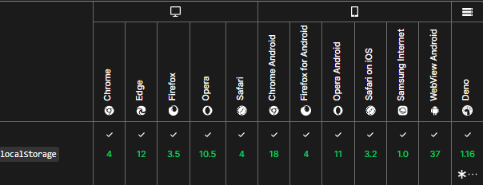
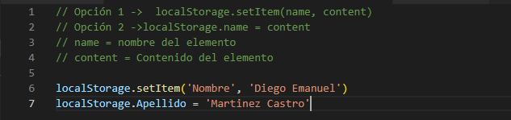
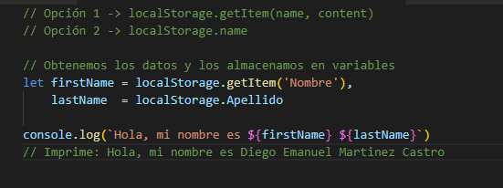
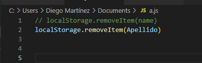

¿Qué es el LocalStorage?
La propiedad de sólo lectura localStorage te permite acceder al objeto local Storage; los datos persisten almacenados entre de las diferentes sesiones de navegación. localStorage es similar a sessionStorage. La única diferencia es que, mientras los datos almacenados en localStorage no tienen fecha de expiración, los datos almacenados en sessionStorage son eliminados cuando finaliza la sesion de navegación, lo cual ocurre cuando se cierra la página.
Debe tenerse en cuenta que los datos almacenados tanto en localStorage como en sessionStorage son específicos del protocolo de la página.
Las características de Local Storage son:
-
Permiten almacenar entre 5MB y 10MB de información; incluyendo texto y multimedia
-
La información está almacenada en la computadora del cliente y NO es enviada en cada petición del servidor, a diferencia de las cookies
-
Utilizan un número mínimo de peticiones al servidor para reducir el tráfico de la red
-
Previenen pérdidas de información cuando se desconecta de la red
-
La información es guardada por domino web (incluye todas las páginas del dominio)
Compatibilidad de Navegadores

Existen dos formas de guardar datos en LocalStorage, que son las siguientes:

Al igual que para agregar información, para recuperarla tenemos dos maneras de hacerlo

Para eliminar un elemento dentro de Storage haremos lo siguiente:

Ventajas y desventajas
| Ventajas | Desventajas |
|---|---|
| El acceso a la información es rápido, dado los datos se almacenan de la forma llave-valor | |
| Los valores que almacena se comparten entre todas las ventanas del mismo sitio | El mismo carácter llave-valor que tiene, hace que para un cúmulo grande de datos no sea eficiente la utilización del mismo |
| Los valores almacenados perduran incluso después de cerrar las ventanas |